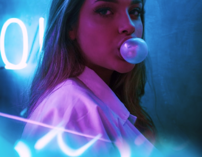
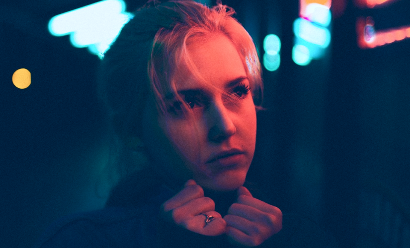

Меня зовут Галина Мэй и я люблю показывать людям насколько они красивы.

0103
Я лишь хочу захватить секундную часть реальности
Я начала фотографировать, когда была подростком. Среди прочих увлечений, которые быстро забывались, фотография надолго вошла в мою жизнь и стала ее неотъемлимой частью.
— Видео с фотосессий
Я люблю людей, которых фотографирую. Я имею в виду, что они мои друзья, через свои фотографии я живу с ними

Как проходит фотосессия
Мы заранее обсуждаем результат, которого вы хотите добиться, ищем локацию и продумываем ваш образ до мелочей. В фотосессию включено время для расслабления и адаптации, ведь в конечном счете, фотография о том, кто вы есть. Это правда по отношению к себе и именно ее мы будем искать.


 03
03